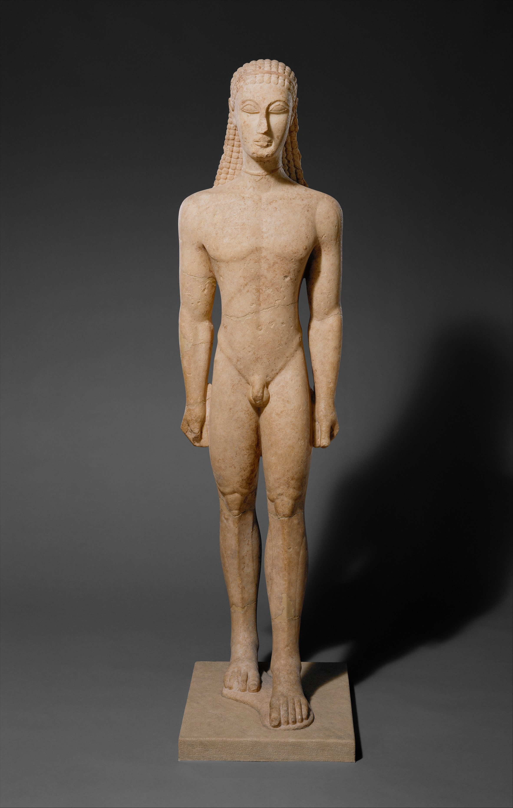
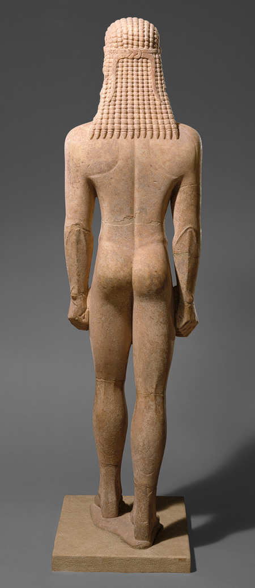
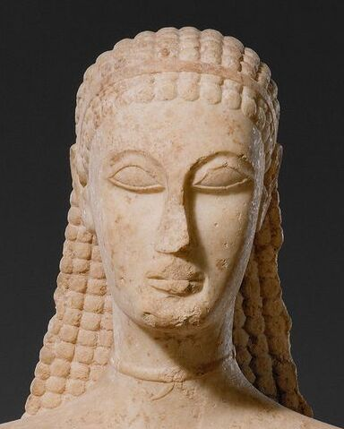
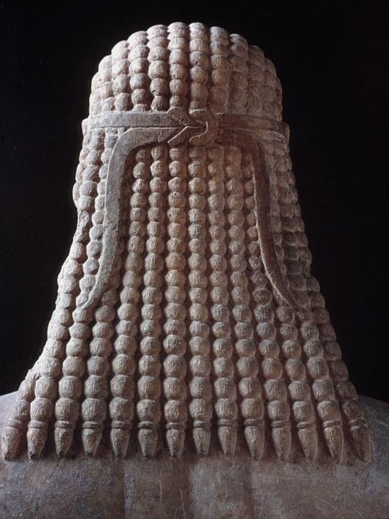

A-Level Greek Art · Free-standing Sculpture · Archaic · 2.1
New York Kouros
One of the earliest surviving monumental Greek statues, a funerary kouros that marks the conventional starting point for the study of free-standing sculpture.
New York Kouros
At a glance

Front · c.590–580 BC · Naxian marble · Met (32.11.1)

Back · the freed limbs and the hair in a beaded mass down the spine
Key facts
Type: kouros, a free-standing nude youth
Date: c.590–580 BC
Material: Naxian marble
Provenance: said to be from Attica
Size: over life-size, c.1.95m
Location: Metropolitan Museum of Art, New York (32.11.1)
Dating note: museums usually give c.590–580 BC, but Woodford and older scholarship place it in the late 7th century BC, so do not be thrown if your textbook dates it earlier
Why it matters
one of the earliest surviving monumental Greek statues, and the conventional starting point for the whole study of free-standing sculpture
a funerary statue (sema), set up over the grave of a young aristocrat
the clearest surviving illustration of the Egyptian foundations of the kouros type
What you are looking at
Pose, anatomy and the logic of the design
New York Kouros, front view — trace the mirrored halves and the rhyming V and W shapes as you read.
Pose and stance
the sentry-box pose: stiff, upright, dead frontal, arms clamped to the sides, fists clenched
the name says it — he stands to attention like a guard in a sentry box, facing straight out
bilaterally symmetrical: a central line splits the figure into matching halves
the left leg is advanced, but the weight is shared evenly on both flat feet, so it goes nowhere

The face: flat almond eyes, ears set high, a near-flat mouth
Head and face
big almond eyes, set flat and near the surface, originally painted
ears set too high, cut as flat spirals
the mouth is a near-flat line: the archaic smile has barely arrived this early

Snail-shell curls under the fillet, a beaded mass behind
Hair
long bead-like hair down the back, a literal string of beads
snail-shell curls across the brow under a fillet (headband)
hair as decoration, not observed texture
Adornmentunusual on a kouros
otherwise nude, he wears two things: the fillet in his hair and a plain band at the throat — a knotted ribbon, in effect a choker
both the fillet and the neck-band were painted a bright red ochre; faint traces survive and have been confirmed by pigment analysis
this is unusual — most kouroi carry no ornament at all, so it is a useful identifying detail
Anatomy and surface
shown nude but for a fillet and neck-band: idealised, athletic, heroic nudity — a Greek convention, where Egyptian and Near-Eastern figures are clothed
the muscles are scratched onto the surface as line, an engraved body rather than a modelled one
disc-like knees, the lower ribs a scalloped arch, the groin a sharp V
built on a fixed grid: long limbs, narrow waist, broad shoulders
the surface was fully painted; the bare white marble we see is a modern accident
The hidden designhow the patterning is organised
left mirrors right down the central axis
around the navel, top mirrors bottom: the V of the groin answers the inverted V of the ribs, the W of the pectorals answers an inverted W of the collar bones
shapes rhyme across the body: the eyebrow echoes the eyelid, the pectoral W reappears above the knees, the groin V reappears in the elbows
The body is a net of matching patterns, knit together with a care that has no parallel in Egyptian sculpture. The anatomy is described by line because the sculptor does not yet model flesh in the round, and because pattern is something he positively values.
How it was made & where it stood
Technique, the break from Egypt, and function
Materials and technique
carved from Naxian marble, a coarse island stone imported into Attica
worked by the subtractive method from a rectangular block, cutting in from each of the four faces separately
tools ran from a punch to block out, to chisels to define, to a rasp and abrasives to smooth, with a drill for the nostrils
laid out on a grid borrowed from Egypt, which locks the figure into verticals and horizontals and rules out bends or twists
the block working is exactly why the figure is so frontal and four-square
The technique dictates the pose: the way the block is laid out and cut is the reason the figure cannot yet move.
Cutting the figure free of the block
the Greek sculptor cut away the dead stone between the legs and arms that the Egyptians left in place
this gives an interplay of mass and void that animates the figure, and keeps the far leg visible from the side
there is no back pillar, and the youth is shown completely nude
the price: pierced stone is weak, so kouroi tend to break at the ankles, knees and arms
Function and context
a kouros could serve as a dedication to a god, a memorial to a man, or a representation of a god
this one is a grave marker (sema) over the tomb of a dead young man
it does not portray the individual: it presents an ideal of athletic young manhood
an over-life-size marble statue was a display of family wealth and status
This is elite self-presentation in death, the family commemorating itself as much as the youth.
Style, significance & development
Where it sits
PatternNaturalism
New Yorkc.590 BC
Anavysosc.530 BC
Aristodikosc.500 BC
The big ideas
01
Born from Egypt, then set free
The sentry-box pose, advanced leg and clenched fists come straight from Egyptian statues, but the Greek sculptor cuts the limbs free of the block and shows the youth nude. The formula is borrowed; the freedom is the Greek addition.
See itno back pillar, limbs cut clear, nude→the break from Egypt, the figure freed into space
02
Pattern before flesh, and on purpose
The muscles are drawn on as line, and the body is knit from rhyming shapes: the V of the groin answers the inverted V of the ribs, the W of the pectorals reappears above the knees. This is design, not a failed attempt at real anatomy.
See itscratched muscles, disc knees, V and W shapes→a statue meant to be a man and an ornament at once
03
The starting line of naturalism
This is the fixed baseline of the whole development. Measured against it, the Anavysos and Aristodikos kouroi show the slow gain of real flesh, until the body looks so alive that the frozen pose itself has to give way.
See itsame pose as later kouroi, but all surface→the yardstick for how far sculpture later moves
Scholarly views
the patterning is a positive design choice, the statue meant as a thing of beauty (Woodford)
the “Greek Revolution”: image-making by formula gives way to making by observation (Gombrich)
a steady, confident progression toward the natural body (Boardman)
a caution against reading kouroi only as steps toward naturalism, keeping their funerary purpose in view (Spivey)
the kouros works on the passer-by, standing in for the dead youth (Osborne)
How to use it in comparison
Against the Anavysos Kouros: same type, around sixty years apart, the clearest single measure of growing naturalism
Internal consistency: by Anavysos the naturalistic face makes the bead-like hair jar, whereas the New York Kouros is harmonious because all of it is pattern
Against an Egyptian standing figure: what is borrowed (pose, grid, fists) and what is changed (no back pillar, nudity, freed limbs)
Alongside the korai (Berlin Standing Goddess, Peplos Kore): the same development carried through drapery and colour
Its limits as evidence
it is idealised, so it tells us about values and conventions rather than any real face or body
its exact find-spot and the identity of the youth are unknown
the loss of paint distorts how we read it, since colour once carried much of the detail
as one of the very earliest examples it is not typical of the mature kouros
Exam focus
Practice questions — 10 and 20 markers
10 markers · source-based · AO1 5 / AO2 5
Analyse the content and composition of the New York Kouros. Make close reference to specific elements of the statue to support your answer. [10]
Explain how well the sculptor has made use of the material from which the New York Kouros is made. [10]
Analyse how the sculptor has represented the human body in the New York Kouros. [10]
Analyse the ways in which the New York Kouros shows the influence of Egyptian sculpture. Make close reference to the statue. [10]
20 markers · evaluative essay · AO1 10 / AO2 10 · the kouros as a starting point
“Archaic free-standing sculpture was more concerned with pattern than with the realistic depiction of the body.” How far do you agree? [20]
“Greek sculptors of the Archaic period broke away from their Egyptian models.” How far do you agree, with reference to free-standing sculpture? [20]
“The development of free-standing sculpture in the Archaic period was a steady march towards naturalism.” How far do you agree? [20]
“Function mattered more to Archaic sculptors than the realistic depiction of the body.” How far do you agree? [20]
Evaluate how effectively Archaic sculptors depicted the human figure in free-standing sculpture. [20]
Flashcards
11 cards — click to flip, use arrows to move through